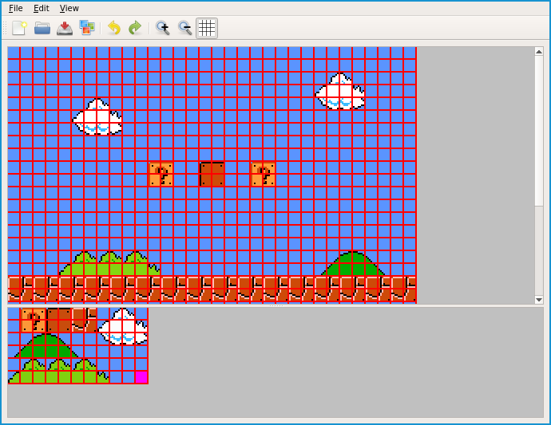
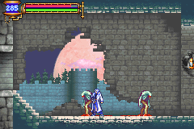

Uit labo 4 weten we hoe het VRAM van de GBA in elkaar steekt: het bestaat uit char en screen blocks. Character blocks 0 tot en met 3 vanaf 0x6010000 zijn gereserveerd voor achtergrond lagen: dat is in totaal meer geheugen dan voor sprites. De Gameboy Advance voorziet aparte registers om de 4 achtergrond lagen te configureren.
Voor sprites speelde een tilemap geen rol, voor grote achtergronden wel: het kost immers minder ruimte om de tile data apart op te slaan en in een map per tile te refereren naar die data. Achtergrond art is typisch iets herhalend: veel wolkjes, dezelfde soorten muren, plafond en vloeren. Uit labo 4:
Om tegen de GBA te zeggen welke tile op welke plaats in het scherm moet komen hebben we een tilemap nodig. Een tilemap kan wél heel groot worden en stelt letterlijk het “level” of de “map” voor, met op elke plaats in de 2-dimensionele lijst een referentie naar een tile. Zie Metroid Level voorbeeld.
We introduceren de volgende nieuwe concepten in ons domein model:
Waarbij de diamant blokken abstracte klassen voorstellen.
Juist zoals het voorgrondpalet (adres 0x5000200) is er maar één palet voor de achtergrond aanwezig bestaande uit 256 kleuren. Om hier mee om te gaan heb je een paar mogelijkheden:
Het adres voor het achtergrondpalet is 0x5000000.
De GBA heeft net zoals het OAM een aantal flags in de vorm van bits nodig per achtergrond om te configureren in welk VRAM de imageset steekt en hoe groot het is. Zie ook weer gbatek specificaties. De belangrijkste flags leven vanaf bit 8 (screen block naar tilemap) en 2 (char block naar imageset).
De adressen voor elk register zijn:
0x4000008 voor BG00x400000a voor BG10x400000c voor BG20x400000e voor BG3De gewenste achtergronden moeten net als de video mode in het algemeen controle register aangezet worden:
#define MODE0 0x00
#define MODE1 0x01
#define BG0_ENABLE 0x100
#define BG1_ENABLE 0x200
#define BG2_ENABLE 0x400
#define BG3_ENABLE 0x800
display_control = MODE0 | BG0_ENABLE;Mode 0 hebben we later nodig om de achtergrond te laten scrollen. Mode 0, 1 en 2 zijn drie mogelijke “tile” (sprite) modes.
Tilemaps leven net zoals de rest wat tiles aanbelangt in het VRAM. Kies een geheugen plaatsje dat niet in beslag genomen wordt door je eigenlijke tile data.
Een tilemap ontwerpen in notepad is snel vervelend en geeft geen visuele feedback. Er zijn tools op ROMHacking.net die (al dan niet specifiek per spel) het ontwerpen vergemakkelijken. De eenvoudigste is GBA Tile-editor:

(Voor Windows gebruikers: Wingrit)
De Onderste image is de tileset. Selecteer één tile en klik dan op een plaats om die tile op de map te doen verschijnen. De editor exporteert de map als een unsigned short[]:
const unsigned short map [] = {
0x0000, 0x0000, 0x0000, 0x0000, 0x0000, 0x0000, 0x0000, 0x0000, 0x0000,
0x0000, 0x0000, 0x0000, 0x0012, 0x0014, 0x0014, 0x0015, 0x0000, 0x0000,
0x0000, 0x0000, 0x0000, 0x0000, 0x0000, 0x0000, 0x0000, 0x0000, 0x0008,
0x0009, 0x0000, 0x0000, 0x0000, 0x0000, 0x0000, 0x0000, 0x0000, 0x0000,
0x0000, 0x0000, 0x0000, 0x0000, 0x0000, 0x0000, 0x0000, 0x0000, 0x001d,
};De waardes zijn referenties naar de tiles in de tileset met 0x0000 als éérste tile linksboven (de blauwe lucht). Dit kopiëren we op dezelfde manier (memcpy) als de tileset op een ongebruikte plaats in het VRAM.
Een tilemap kan best groot worden, en bijna alle 2D platformers of top-down adventure spellen op de GBA hebben een achtergrond die “scrollt”. Herinner je het Castlevania voorbeeld uit labo 8:

Je kan duidelijk zien dat de achtergrond niet alleen bestaat uit verschillende lagen, maar ze ook scrollt afhankelijk van de positie van Soma, het hoofdpersonage. Scrollen in X of Y richting is heel eenvoudig en vereist - verrassing! - manipuleren van een register: van 0x4000010 tot 0x400001e (+2, beginnen met bg0 x, bg0 y, bg1 x, …).
Dit is een write-only register: de X en Y scroll waardes zal je zelf in een variabele moeten bijhouden. Vergeet dit niet te doen na een VBLANK om tearing te vermijden.
De verschillende lagen zijn een ideaal slachtoffer om in C++ concepten als templates of abstract klassen toe te passen. De enige verschillen zijn immers de adressen in in het RAM.
Om geen random waardes te gebruiken als charblock of screenblock om de tileset en tilemaps van elke achtergrond in weg te schrijven hebben we nood aan een “geheugen beheerder” concept:
De memory manager en het achtergrondpalet zijn gedeeld tussen de backgroundlayer instanties. Uit het schema van labo 8 weten we dat een GBA klasse nodig is die de memory manager, achtergrondlagen en paletten aanmaakt en gebruikt.
In totaal hebben we de volgende gegevens nodig:
De klasse Palette met members:
unsigned short data[X] (komt uit tile generator)De abstracte klasse BaseBGLayer met members:
void scroll(int x, int y)int scrollX, scrollYunsigned short tileset[X] (komt uit tile generator)unsigned short tilemap[X] (komt uit tile generator)Palette paletteunsigned short addressDe concrete implementatie van de base klasse BGLayer0 met als juiste adres waarde, doorgegeven via de constructor parameter.
De klasse MemoryManager, met members:
void save(BaseBGLayer bglayer) (bewaar data in GBA geheugen)De klasse GBA, met members:
MemoryManager managervoid initialize() (maak nodige instanties aan en roep bewaar op)void run() (main game loop)void vblank()De file main.cpp met een main() functie die de GBA klasse activeert.
Vergeet niet te denken aan:
cout). De focus ligt op het juiste OO ontwerp.for(int i = 0; i < 4567; i++){}.{kind=link}